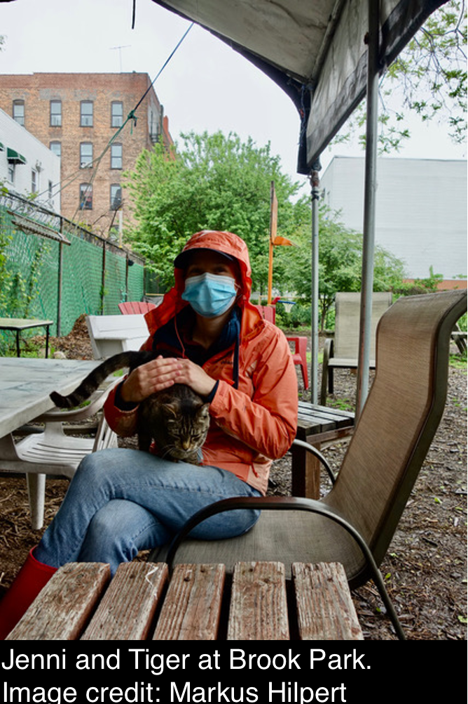

NIEHS Award F31 ES033098. Role: PI. “Impact of COVID-19 related stay-at-home orders on traffic, traffic-related air pollution, and cardiovascular health in New York City.” September 1, 2021 - August 30, 2023. $32,849
NIEHS Center Pilot Award P30ES009089. Role: Co-I. “Tampons as a source of pesticide and metal exposure: A novel exposure assessment study.” April 1, 2022 - March 31, 2023. $35,000

Upson K, Shearston JA, Kioumourtzoglou MA. (2022). An Epidemiologic Review of Menstrual Blood Loss as an Excretion Route for Per- and Polyfluoroalkyl Substances. Curr Environ Health Rep; 9, 29-37. doi: 10.1007/s40572-022-00332-0
Upson K, Shearston JA, Kioumourtzoglou MA. (2022). Menstrual Products as a Source of Environmental Chemical Exposure: A Review from the Epidemiologic Perspective. Curr Environ Health Rep; 9, 38-52. doi: 10.1007/s40572-022-00331-1
Shearston JA, Hilpert M. (2020). Gasoline Vapor Emissions During Vehicle Refueling Events in a Vehicle Fleet Saturated with Onboard Refueling Vapor Recovery Systems: Need for an Exposure Assessment. Front Public Health; 8(18). doi: 10.3389/fpubh.2020.00018. PMCID: PMC7020915
Hsieh PY, Shearston JA, Hilpert M. (2021). Benzene Emissions from Gas Station Clusters: A New Framework for Estimating Lifetime Cancer Risk. J Environ Health Sci Engineer; doi: 10.1007/s40201-020-00601-w
Al-Marzooq F, Al Kawas S, Rahman B, Shearston JA, Saad H, Benzina D, Weitzman M. (2022). Supragingival Microbiome Alterations as a Consequence of Smoking Different Tobacco Types and its Relation to Dental Caries. Sci Rep; 12, 2861. doi: 10.1038/s41598-022-06907-z
Shearston JA, Eazor J, Lee L, Vilcassim R, Reed T, Ort D, Weitzman M, Gordon T. (2021). Effects of Electronic Cigarettes and Hookah Water Pipe Use on Home Air Quality. Tob Control. doi: 10.1136/tobaccocontrol-2020-056437
Shearston JA, Lee L, Eazor J, Meherally S, Park SH, Vilcassim MJR, Weitzman M, Gordon T. (2019). Effects of Exposure to Direct and Secondhand Hookah and E-Cigarette Aerosols on Ambient Air Quality and Cardiopulmonary Health in Adults and Children: Protocol For A Panel Study. BMJ Open; 9(6) e029490. doi: 10.1136/bmjopen-2019-029490. PMCID: PMC6597628
Shearston JA, Shah K, Cheng E, Moosvi R, Park SH, Patel N, Spielman AI, Weitzman M. (2017). Dental, Dental Hygiene, and Advanced Dental Students’ Use, Knowledge, and Beliefs Regarding Tobacco Products. J Dental Educ; Nov:81(11):1317-1326. doi: 10.21815/JDE.017.091.
Weitzman M, Yusufali AH, Bali F, Vilcassim MJ, Gandhi S, Peltier R, Nadas A, Sherman S, Lee L, Hong Z, Shearston JA, Park SH, Gordon T. (2016). Effects of hookah smoking on indoor air quality. Tob Control; pii: tobaccocontrol-2016-053165.